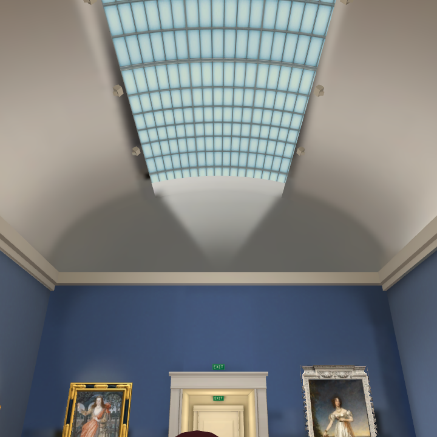

Skylight and far-end plaster
Reference
Before
Cap repair, initial lighting

Second lighting trial
Separate cap lightmap trial
 Reference
Reference BeforeCap repair, initial lighting
BeforeCap repair, initial lighting Separate cap lightmap trial
Separate cap lightmap trial